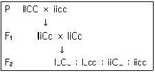
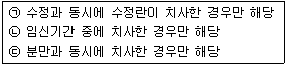
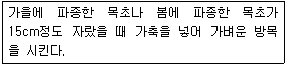

축산기사 (2012-09-15 기출문제)
1과목: 가축육종학
1. 우모발생속도가 조우성인 닭과 만우성인 닭을 교배할 때 우모발생속도의 유전 방식은?
- 종성유전
- 반성유전
- 융합유전
- 득성유전
(정답률: 71%)

2. 고기소에서 송아지 생산율이란?
- 우군 내 번식우로 사용되는 모든 암소에 대한 이유된 송아지의 비율
- 우군 내 번식우로 사용되는 모든 암소에 대한 출생된 송아지의 비율
- 우군 내 번식우로 사용되는 모든 암소에 대한 출하된 송아지의 비율
- 출생된 송아지에 대한 이유된 송아지의 비율
(정답률: 49%)
3. 육종가의 기본이 되는 유전자의 효과는?
- 유성 효과(dominance effects)
- 상가적 효과(additive effects)
- 초우성 효과(overdominance effects)
- 상위성 효과(epistatic effects)
(정답률: 65%)
4. 다음 중 유전적 개량량(선발반응; Selection Response)을 추정하는데 필요하지 않은 요소는?(문제 오류로 3번 4번 보기가 같습니다. 정확한 내용을 아시는분 께서는 오류 신고를 통하여 내용 작성 부탁 드립니다. 정답은 3번 입니다.)
- 선발된 개체들의 평균
- 유전력
- 도태된 개체들의 평균
- 모집단의 평균
(정답률: 90%)
5. 초년도의 산란수를 지배하는 GOODALE-HAYS의 산란 5요소와 관계가 없는 것은?
- 조숙성
- 취소성
- 강건성
- 동기휴산성
(정답률: 70%)
6. 개량되지 않은 재래종을 개량종과 연속적으로 교배하여 개량종의 혈액비를 높이는 교배방법을 무엇이라 하는가?
- 근친교배
- 윤환교배
- 누진교배
- 십자교배
(정답률: 83%)
7. 소의 매끄러운 혀(smooth tongue)는 한 쌍의 상염색체성 단순열성 유전자에 의하여 발현되는데 혀 표면의 작고 굳은 유두 돌기가 미약하여 상처가 나기 쉽다. 이 개체의 피모는 벨벳처럼 짧고 가늘며 피부는 수직의 주름살을 갖는다. 송아지는 음수량이 많아 연변을 배설하며 피모는 항상 더럽고 피부 습진 등의 발생이 많다. 뿔은 연하고 혈청내 철분 함유율이 낮으며 적혈구의 크기도 정상에 비해 현저하게 적은 저색소성 빈혈증을 나타낸다. 이와 같이 1개의 유전자가 여러 형질을 지배하는 유전 현상은?
- 유전자의 다면작용
- 유전자의 치사작용
- 유전자의 표현도
- 유전자의 침투성
(정답률: 88%)
8. 전형매(全兄妹)사이에 서로 교배를 시켰을 때에 근친계수(近親係數)는 얼마인가?
- 6.25%
- 12.5%
- 25%
- 50%
(정답률: 79%)
9. 좁은 의미의 유전력에 비하여 넓은 의미의 유전력이 더 높게 되는데 기여할 수 있는 것은?
- 환경분산과 상가적 유전분산
- 환경분산과 우성분산
- 상위성분산과 우성분산
- 상위성분산과 상가적 유전분산
(정답률: 61%)
10. 톱교잡용(Topcross)이란 어떤 교배간의 자손을 통틀어 말하는가?
- 근교계통 수컷 × 근교계통 암컷
- 근교계통 수컷 × 비근교계통 암컷
- 비근교계통 수컷 × 근교계통 암컷
- 비근교계통 수컷 × 비근교계통 암컷
(정답률: 62%)
11. 육우의 경제형질 중 이유 후 증체율의 유전율(%)로 가장 적합한 것은?
- 20% 미만
- 20~30%
- 40~50%
- 60% 이상
(정답률: 39%)
12. 횡반 Plymouth Rock종 암탉과 흑색 Minorca종 수탉을 교배할 때 우모색의 유전양식은?
- 종성유전
- 귀선유전
- 융합유전
- 반성유전
(정답률: 66%)
13. 전체 분산 중에서 유전분산이 차지하는 비율은?
- 반복력
- 유전력
- 유전상관
- 선발지수
(정답률: 71%)
14. 3원윤환교잡(三元輪換交雜)을 실시할 경우 마지막으로 사용된 품종이 차지하는 유전적 조성(組成)은 얼마인가?
- 14%
- 29%
- 33%
- 57%
(정답률: 45%)
15. 피라밋형의 돼지 집단 구조는 돼지의 유전적 개량과 능력향상에 효과적인 것으로 평가되고 있으며 우리나라에서도 이렇게 나아가고 있다. 중핵돈군 - 증식돈군 - 실용돈군으로 이어지는 피라킷형 돼지 집단 구조에 대한 다음의 설명 중 옳지 않은 것은?
- 중핵돈군에서는 유전적으로 능력이 우수한 돼지를 보유하고, 순종교배에 의해 계통을 유지하여야 한다.
- 중핵돈군에서는 반드시 능력검정과 후대검정을 실시하여야 한다.
- 증식돈군에서는 중핵돈군에서 받은 돼지를 이용하여 잡종 강세 효과가 최대로 발현될 수 잇도록 잡종교배를 실시한다.
- 실용둔군에서는 증식돈군에서 받은 우수한 돼지를 활용하여 자체적으로 계속 번식해 나가야 한다.
(정답률: 55%)
16. 다음은 백색 Leghorn종과 열성 백색종인 Plymouth Rock 종간의 교배를 나타낸 것이다. 이러한 유전자 작용에 대한 설명 중 틀린 것은?

- 유색 깃털을 가진 개체는 전체 개체 중 3/16의 비율로 나타난다.
- 백색 Leghorn종은 색원체 유전자를 우성(C)으로 갖고 있으나 이 기능을 억제하는 유전자(I)를 함께 가지고 있으므로 색소립이 정상적으로 생산되지 않기 때문에 깃털색이 백색이 된다.
- 색원체 유전자(C)는 억제 유전자(I)가 존재하는 경우 자신의 표현형을 발현시키지 못하고 피복되어 깃털의 색을 나타내지 못하므로 열성 유전자라고 한다.
- 이러한 유전자 작용을 상위성 유전자 작용이라고 한다.
(정답률: 54%)
17. 젖소의 산차별 산유량에서와 같이 같은 개체에 두개의 다른 기록 사이의 상관 계수는?
- 반복력
- 유전력
- 윤전상관
- 환경상관
(정답률: 58%)
18. 안면백반(顔面白班) 유전자를 가지고 있는 소의 품종은?
- Angus종
- Hereford종
- Brahman종
- Santa Gertrudis종
(정답률: 59%)
19. 다음 [보기]에서 치사유전자(Lethal gene)의 설명으로 맞는 것을 모두 고른 것은?

- ㉠
- ㉠, ㉡
- ㉡, ㉢
- ㉠, ㉡, ㉢
(정답률: 66%)
20. 같은 축군에서, 같은 연도에, 같은 계절에 분만한 번식우를 가리키는 용어는?
- 종모우
- 동거우
- 검정우
- 동기우
(정답률: 49%)
2과목: 가축번식생리학
21. 수정란 이식에 의하여 얻을 수 있는 가장 큰 이점은?
- 단위 가격당 가축생산 두수 증대
- 단위 시간당 가축생산 두수 증대
- 종모축의 유전자 이용률 증대
- 우수 종빈축의 유전자 이용율 증대
(정답률: 68%)
22. 다음 중 유즙분비와 유즙강하(milk letdown)에 관여하는 호르몬을 올바르게 연결한 것은?
- 유즙분비 : FSH, 유즙강하 : progesterone
- 유즙분비 : prolactin, 유즙강하 : progesterone
- 유즙분비 : FSH, 유즙강하 : oxytocin
- 유즙분비 : prolactin, 유즙강하 : oxytocin
(정답률: 69%)
23. 다음 중 산양의 평균 발정주기 일수는?
- 18일
- 21일
- 28일
- 35일
(정답률: 48%)
24. 성숙한 한우에서 곧 바로 채취한 정액(신선한 정액)의 pH는?
- pH 7.5이상
- pH 6.5~7.0
- pH 5.5~6.5
- pH 5.5 이하
(정답률: 73%)
25. 가축 인공수정시 정액을 주입할 때 주입기를 삽입하는 부위가 잘못 설명된 것은?
- 소-자궁체내
- 돼지-자궁경관
- 닭-난관개구부
- 면양-난관 팽대부
(정답률: 49%)
26. 다음 중 암소와 암퇘지의 발정징후가 아닌 것은?
- 거동이 불안함
- 소리에 민감함
- 수컷과의 교미를 허용함
- 외음부에 주름이 나타남
(정답률: 75%)
27. 정자에서 유전자(DNA)를 함유하고 있는 부위는?
- 두부(head)
- 경부(neck)
- 종부(tail)
- 중편부(middle piece)
(정답률: 82%)
28. 닭의 정액을 채취할 때 가장 많이 사용하는 방법은?
- 복부마사지법
- 콘돔법
- 전기자극법
- 수압법
(정답률: 65%)
29. 수정란이 분할을 거듭하여 각종 조직과 기관으로 분화되는 과정에서 순환기, 심장, 혈관 등으로 발생되는 기관은?
- 외배엽
- 중배엽
- 내배엽
- 난황막
(정답률: 51%)
30. 수소의 생식기도 내에서 정자와 정장이 섞이어 정액이 만들어지는 부위는?
- 정소상체 미부
- 정관 팽대부
- 요도 골반부
- 요도 음경부
(정답률: 44%)
31. 다음 동물 중 교미를 해야 배란이 되는 것은?
- 햄스터
- 밍크
- 산양
- 말
(정답률: 68%)
32. 난소에서 분비되는 에스트로겐(estrogen)이 시상하부의 배란전 방출조절 중추를 자극하여 GnRH 분비를 유발시킴으로써 뇌하수체로부터 LH를 급격하게 방출시키는 조절기전을 무엇이라 하는가?
- 정(正)의 피드백(Positive feedback)
- 부(負)의 피드백(Negative feedback)
- 신경-체액의 조절기전
- 단경로 피드백(Short loop feedback)
(정답률: 78%)
33. 한 개체나 난소와 정소를 각각 1개씩 가지고 있거나, 양쪽의 성선이 난정소(卵精巢, ovotestis)인 것을 의미하는 것은?
- 진반음양
- 위반음양
- 웅성위반음양
- 프리마틴
(정답률: 38%)
34. 소의 교배적기에 관한 설명 중 틀린 것은?
- 다른 소가 승가하는 것을 허용할 때 수정한다.
- 배란전 13~18시간에 수정한다.
- 발정종료전 1시간에서 종료 후 3시간내 수정한다.
- 배란후 6~12시간에 수정한다.
(정답률: 40%)
35. 성숙한 포유가축에서 정자형성(Spermatogensis)이 일어나는 장소는?
- 정관
- 세정관
- 정관팽대부
- 정소수출소관
(정답률: 71%)
36. 다음 중 분만시 작용하는 호르몬에 대한 설명으로 틀린 것은?
- estrogen의 분비가 증가한다.
- prostaglandin의 분비가 증가한다.
- progesterone의 분비가 증가한다.
- 태아의 cortisol이 증가한다.
(정답률: 66%)
37. 난자생성과정에서 세포학적 염색체수가 2n인 단계는?
- 제 1난모세포
- 제 2난모세포
- 성숙난자
- 제 2극체
(정답률: 61%)
38. 다음 중 돼지의 평균 임신기간은 얼마인가?
- 114일
- 150일
- 285일
- 340일
(정답률: 78%)
39. 임신 1개월의 소 생식기의 직장검사에 의한 소견이 아닌 것은?
- 한쪽의 자궁각이 반대쪽보다 크다.
- 질은 습윤하고 끈적끈적하다.
- 농축된 점액이 자궁외구부를 밀폐한다.
- 황체는 21일전에 배란이 일어났던 난소에 존재한다.
(정답률: 60%)
40. 젖소(홀스타인) 암컷의 성성숙(puberty) 월령으로 가장 적합한 것은?
- 8~10개월
- 16~21개월
- 24~29개월
- 32~37개월
(정답률: 66%)
3과목: 가축사양학
41. 양계사료에서 초생추 사료 중에 현저히 더 많은 함량을 요구하는 영양소는?
- 칼슘과 인
- 에너지
- 단백질
- 비타민
(정답률: 49%)
42. Pearson의 사료계산법은 두 가지의 원료사료를 섞어서 희망하는 사료성분을 만드어 내고자 할 때 쓰이는 계산방법이다. 그러면, 70%의 TDN을 함유한 대두박과 84%의 TDN을 함유한 옥수수를 배합하여 TDN 함량이 78%인 사료를 만들고자 한다면 대두박과 옥수수를 각각 몇 %씩 섞어야 하는가?
- 대두박 : 57.14%, 옥수수 : 42.86%
- 대두박 : 41.98%, 옥수수 : 58.02%
- 대두박 : 58.02%, 옥수수 : 41.98%
- 대두박 : 42.86%, 옥수수 : 57.14%
(정답률: 65%)
43. 아미노산 alanine을 생체내에서 합성하는데 필요한 과정이 아닌 것은?
- Transamination 과정
- Transmethylation 과정
- Deamination 과정
- Embden-Meyerhof 과정
(정답률: 41%)
44. 인(P)과 칼슘을 동시에 공급할 수 있는 물질은?
- 탈불인광석
- 석회석
- 패각분
- 탄산칼슘
(정답률: 42%)
45. 닭의 체감온도는 건구온도(DBT)와 습구온도(WBT)에 따라서 변한다. 닭의 체감온도를 나타낸 수식은?
- (0.⑤×DBT)+(0.85×WBT)
- (0.15×DBT)+(0.65×WBT)
- (0.35×DBT)+(0.35×WBT)
- (0.7~0.8×DBT)+(0.2~0.3×WBT)
(정답률: 43%)
46. 베타산화(β-oxidation)는 다음 중 어떤 영양소의 산화와 밀접한 관련이 있는가?
- 단백질
- 비타민
- 포도당
- 지방산
(정답률: 72%)
47. 사양표준에서 젖소의 정미에너지(Net energy)의 요구량을 NEm, NEg 침 NEℓ로 구분하여 제시한 것은 어떤 것인가?
- NRC 사양표준
- ARC 사양표준
- Morrison 사양표준
- 건초가
(정답률: 68%)
48. 탄수화물의 소화에 관여하는 효소는?
- lipase
- protease
- amylase
- peptidase
(정답률: 77%)
49. 단위가축 소장의 대사과정에서 가장 중요하게 쓰이는 탄수화물은?
- Glucose
- Fructose
- Mannose
- Galactose
(정답률: 74%)
50. 반추위내에서 섬유소를 분해, 이용하는 미생물이 단백질 합성을 위해 중요한 질소원으로써 이용하는 것은?
- 비단백질소화합물(NPN)
- 초산(Acetate)
- 프로피온산(Propionate)
- 우회단백질(Bypass protein)
(정답률: 71%)
51. 닭의 단백질 요구량은 곧 필수아미노산과 비필수아미노산의 요구량이라고도 할 수 있다. 다음 중 필수아미노산이 아닌 것은?
- 트립토판(Tryptophan)
- 메치오닌(Methionine)
- 발린(Valine)
- 세린(Serine)
(정답률: 69%)
52. 적당하고 성숙한 산란계의 칼로리ㆍ단백질비(C/P)는?
- 193~195
- 198~201
- 2⑤~210
- 208~215
(정답률: 29%)
53. 다음 중 탄소, 수소, 산소의 비율이 다른 다당류와 달라 탄수화물이라고 간주하지 않는 것은?
- 리그닌(lignin)
- 검(gums)
- 글리코겐(glycogen)
- 펙틴(pectins)
(정답률: 55%)
54. 산란계의 기초대사량(kcal/NE/일)은?
- 45 Wkg0.75
- 55 Wkg0.75
- 68 Wkg0.75
- 88 Wkg0.75
(정답률: 56%)
55. 다음 중 브로일러 배합사료에서 Ca:P의 비율로 가장 적당한 것은?
- 1 : 1
- 2 : 1
- 3 : 1
- 4 : 1
(정답률: 67%)
56. 무기물의 영양대사 중 황(S)과 관련된 설명으로 틀린 것은?
- 무기태황의 형태로 오줌 배설되는 것으로서 그 배설량은 섭취한 단백질의 양에 비례한다.
- 아미노산인 cydtineㆍcystineㆍmethionine 등의 구성 성분이다.
- 소장으로부터의 당류의 흡수를 돕고, 신장에서의 glucose의 재흡수를 돕는다.
- 반추동물 사료 중의 황과 질소함량의 비율은 1:10정도가 적당하다.
(정답률: 40%)
57. 가축 체내에서 무기물의 일반적인 기능에 속하지 않는 것은?
- 골격, 난각의 주요 구성성분이다.
- 산, 염기의 평형에 필요하다.
- 고열량의 영양소이다.
- 효소나 호르몬의 활성제이다.
(정답률: 75%)
58. 다음 중 음식물의 소화를 위해 위산과 펩신(pepsin) 등의 소화액을 분비하는 닭의 기관은?
- 식도(esophagus)
- 소낭(crop)
- 선위(proventriculus)
- 근위(gizzard)
(정답률: 72%)
59. 젖소에 있어서 완충제(buffer)의 사용과 관계없는 것은?
- 유지율 저하 방지
- 산성증(acidosis) 발생방지
- H2CO3HCO3
- CuSO4ㆍ5H2O
(정답률: 53%)
60. 병아리 육추시 탁우성(啄羽性:쪼는 성질)이 발생하는 원인과 거리가 먼 것은?
- 밀사(密飼)하고 있을 때
- 직사광선의 부족으로 너무 어두웠을 때
- 지나친 농후사료로 섬유질이 부족한 때
- 사료중에 비타민, 단백질, 무기성분이 결핍되었을 때
(정답률: 66%)
4과목: 사료작물학 및 초지학
61. 다음 중 시간제한 방목을 할 경우 1일 언제, 몇 시간 방목을 하는 것이 적당한가?
- 오전과 오후에 각 2시간씩
- 오전과 오후에 각 4시간씩
- 오전에만 4시간
- 오후에만 4시간
(정답률: 73%)
62. 사일리지를 만들 때 이용하는 첨가제를 분류할 때 젖산균 첨가제(inoculant)는 어디에 속하는가?
- 발효 촉진제
- 발효 억제제
- 수분 조절제
- 영양소 보충제
(정답률: 77%)
63. 건초 위주의 사양시 체중 600kg의 소 1마리가 1일 섭취해야 할 건초의 양으로 가장 적당한 것은?
- 6~9kg
- 9~12kg
- 12~18kg
- 18~24kg
(정답률: 47%)
64. 초지잡초 중 애기수영에 관한 설명으로 옳은 것은?
- 우리나라 원산으로 가축의 기호성이 좋기 때문에 별다른 방제가 필요 없다.
- 콩과이기 때문에 뿌리혹박테리아를 이용하여 질소를 고정하므로 토양을 비옥하게 한다.
- 한 포기에서 연간 1000~10000개이 종자를 생산하며 종자와 뿌리로 번식하여 초지부실화를 촉진한다.
- 토양이 비옥하고 알칼리성 토양에 특히 잘 번성하므로 퇴비나 비료를 주지 않으면 자연히 없어진다.
(정답률: 62%)
65. 사료작물의 식물학적 분류법에 대한 설명으로 틀린 것은?
- 이명법(二命法)에 따르면 첫부분이 종명(species)이고, 둘째 부분이 속명(genus)이다.
- 식물에 대한 최초의 분류는 Carl Linnaeus에 의해 이룩되었다.
- 오늘날 식물의 분류는 라틴어를 쓰고 있다.
- 모든 사료작물은 식물계(kingdom)로부터 시작해서 품종(variety)에 가지 이르고 있다.
(정답률: 45%)
66. 처예 또는 사일리지 사료로 재배되는 귀리(연맥)는 우리나라 중 북부지방의 2모작 조건하에서라면 다음 중 어떤 품종이 가장 적합하겠는가?
- 조숙성 가을연맥(귀리)
- 만숙성 가을연맥(귀리)
- 조숙성 봄연맥(귀리)
- 만숙성 봄연맥(귀리)
(정답률: 32%)
67. 두과(콩과) 사료작물들의 근류균주들이 상호접종될 수 이는 조합은?
- 알팔파 - 헤어리벳치
- 화이트클로버 - 청예대두
- 알팔파 - 스위트클로버
- 강낭콩 - 루핀
(정답률: 59%)
68. 불경운초지개량에서 선점식생을 제거하는 방법이 아닌 것은?
- 로타리법
- 화입법
- 제초제 사용방법
- 가축에 희한 제경법
(정답률: 59%)
69. 목초의 가을 파종이 봄 파종에 비해서 유리한 것은?
- 발아율이 현저히 증가한다.
- 사료가치가 향상된다.
- 잡초에 의한 경합이 감소된다.
- 생육이 빨라진다.
(정답률: 71%)
70. 혼파초지 또는 목장의 울타리 주변, 도로 경사면 등에서 흔히 볼 수 있는 목초의 잎은 긴 계란형이며 잎의 뒷면과 줄기에는 많은 털이 있고 잎 중앙에 "V"형 무늬가 있는 경우가 많다. 이직립형 이년생 콩과목초는?
- 알팔파(Alfalfa)
- 화이트 클로버(White clover)
- 레드 클로버(Red clover)
- 버어드풋 트레포일(Birdsfoot trefoil)
(정답률: 49%)
71. 다음 중 학명과 작물명이 일치하는 것은?
- Trifolium pratense L : 레드클로버
- Dactylis glomerata L : 티모시
- Lolium perenne L : 화이트클로버
- Festuca arundinacea Schr : 이탈리안라이그라스
(정답률: 52%)
72. 사일리지용 옥수수의 수확적기는?
- 암이삭이 올라올 때
- 유숙기
- 황숙기
- 경화기
(정답률: 75%)
73. 내한성이 약한 편으로 우리나라 남부지방에서 답리작으로 재배하며 2회 수확이 가능한 사료작물은?
- 이탈리안라이그라스
- 유채
- 보리
- 귀리
(정답률: 65%)
74. 우리나라 산지토양이 갖는 가장 일반적인 특성은?
- 비옥하고 침식이 적다.
- 토심이 얕고 자갈이 많다.
- 경사가 심하나 유기물이 많다.
- 수분이 충분하고 중성에 가깝다.
(정답률: 64%)
75. 다음 중 클로버 우점현상의 원인이 아닌 것은?
- 잦은 예취
- 낮은 예취
- 질소비료 시비
- 봄에 일찍 예취
(정답률: 54%)
76. 다음은 무엇을 설명한 것인가?

- Drilling
- Establishment
- Topping
- Trampling
(정답률: 68%)
77. 목초는 초종에 따라 수확횟수에 대하여 반응이 민감한 것이 있고 그렇지 않는 것이 있다. 이것을 목초의 형태에 따라 나누면 상번초와 하번초로 나누는데 다음 중 상번초에 해당하는 목초는?
- 켄터키 블루그라스(Kentucky bluegrass)
- 페레니얼 라이그라스(Perennial ryegrass)
- 레드 페스큐(Red fescue)
- 오처드그라스(Orchardgrass)
(정답률: 52%)
78. 수단그라스의 생육 특성으로 옳지 않은 것은?
- 옥수수보다 건조한 토양에 약하다.
- 옥수수보다 생육에 더 고온을 요한다.
- 재생력이 강하다.
- 옥수수보다 토양 적응성이 높다.
(정답률: 41%)
79. 다음 중 원형곤포사일리지의 특징이 아닌 것은?
- 예취 후 짧은 기간에 조제하여 기후의 영향이 적다.
- 운반과 저장이 용이하다.
- 기계구입 비용이 적어 초기자본이 적다.
- 사일리지 유통이 쉽다.
(정답률: 73%)
80. 목초가 25℃의 고온이 되면 생장이 정지되고 식물체가 약해지면서 병충해 발생이 증가되어 심하게 지속되면 말라 죽는 것을 무엇이라 하는가?
- 월동장애
- 하고현상
- 답압내성
- 설부피해
(정답률: 78%)
5과목: 축산경영학 및 축산물가공학
81. 다음 중 축산경영자의 경제적 기능에 속하지 않는 것은?
- 가축의 종류를 선택하고 결정한다.
- 가축의 생산순서와 생산규모를 결정한다.
- 경영에 적용할 생산기술을 결정한다.
- 경영성과를 분석하고 경영계획을 세운다.
(정답률: 59%)
82. 양돈경영에서 비육돈 300두를 1인이 관리하는 것보다 500두를 관리하는 것이 더 유리할 때가 있다. 이와 같이 변화 중 생산규모가 확대됨에 따라 평균생산비는 감소하고 수익이 체증하는 현상을 설명한 가장 적합한 용어는?
- 규모의 경제성
- 수확의 체감성
- 손실의 최소화
- 선입선출
(정답률: 66%)
83. 다음 중 계란 생산을 위해 필요한 비용에 있어 경영비에 속하지 않는 것은?
- 사료비
- 자가노력비
- 차입금이자
- 진료위생비
(정답률: 50%)
84. 다음 중 계란의 생산비 절감방안으로 적당하지 않은 것은?
- 경영규모를 확대한다.
- 노동생산성을 낮춘다.
- 산란계의 육성율을 높인다.
- 산란계의 생존율을 높인다.
(정답률: 54%)
85. 다음 중 축산경영의 합리화 방안으로 볼 수 없는 것은?
- 생산성 향상
- 물류비용 증대
- 생산비 절감
- 생산기술이 개선
(정답률: 71%)
86. 축산경영은 일반적인 특징과 경제적인 특징으로 분류되는데 다음 중 경제적 특징으로 볼 수 없는 것은?
- 자금회전의 원활화
- 토지의 이용 증진
- 노동력의 이용 증진
- 경영규모의 영세성
(정답률: 46%)
87. 노동력 중에서 노동에 대한 대가가 농업노임으로서가 아니라 경영성과로 얻어지는 소득의 원천이 되는 노동력은?
- 자가 노동력
- 연고 노동력
- 일고 노동력
- 청부 노동력
(정답률: 71%)
88. 다음 중 축산경영의 생산함수 분석에서 한계생산물이 평균생산물과 일치할 때의 설명으로 옳은 것은?
- 평균생산물은 증가한다.
- 평균생산물은 감소한다.
- 평균생산물은 최대가 된다.
- 평균생산물은 0 이 된다.
(정답률: 70%)
89. 다음 중 비육우경영의 기술진단지표에 해당하지 않는 것은?
- 1두 1일당 증체량
- 사료요구율
- 사료효율
- 분만율
(정답률: 69%)
90. 다음 중 한우산업의 발전과 관련된 설명으로 적절하지 않은 것은?
- 타 가축과의 경쟁력을 고려하여 번식률과 산육능력을 향상시켜야 한다.
- 유축농가의 부존자원을 효율적으로 이용하여야 한다.
- 비육기간의 연장으로 출하체중을 높이도록 한다.
- 한우의 산육능력이 외국의 육우에 비하여 떨어지므로 교잡우에 대한 연구가 필요하다.
(정답률: 41%)
91. 다음 중 토지의 경제적 성질이 아닌 것은?
- 불가증성(不可增性)
- 불소모성(不消耗性)
- 불가동성(不可動性)
- 불양력성(不養力性)
(정답률: 66%)
92. 다음 중 유사비(유飼比)에 관한 내용으로 옳은 것은?
- 유대에 대한 구입사료비의 비율
- 사료비에 대한 우유생산량의 비율
- 유대에 대한 조사료의 비율
- 우유생산량에 대한 사료비의 비율
(정답률: 56%)
93. 다음 중 축산경영의 대상 축종을 한우에서 양돈으로 변경할 경우 경영내의 변화를 분석ㆍ검토하여 효율적인 대안을 선택하여 경영계획을 수립하는 방법은?
- 표준계획법
- 예산법
- 적정목표이익법
- 직접비교법
(정답률: 42%)
94. 생산함수가 Y=50+1.5X-0.5X2이며, 사료값이 kg당 Px=500원, 출하가격이kg당 Py=1000원이라면, X의 적정 투입 수준은? (단, X는 농후사료, Y는 육계체중이다.)
- 1단위
- 2단위
- 15단위
- 50단위
(정답률: 35%)
95. 다음 중 조수입이 500만원, 고정비가 100만원, 변동비가 300만원일 때 손익분기점은?
- 100만원
- 150만원
- 250만원
- 300만원
(정답률: 45%)
96. 다음 중 도시근교형 낙농경영에 관한 특징으로 틀린 것은?
- 경영의 집약도가 다른 경영형태에 비하여 상대적으로 높다.
- 시유용 원유를 생산 공급하는데 유리한 경영형태이다.
- 조사료 생산이 상대적으로 용이하고 조방적인 경영형태이다.
- 토지 면적이 상대적으로 좁고, 착유전업형 경영형태를 이룬다.
(정답률: 71%)
97. 다음 중 축산경영 조직의 경정에 영향을 미치는 요인과 가장 거리가 먼 것은?
- 자연적 조건
- 사회ㆍ경제적조건
- 개인적 사정
- 고용노동력의 능력
(정답률: 32%)
98. 다음 중 자산을 구입할 경우 구입가격과 구입시 소요되는 제반비용을 합산하여 평가하는 방법은?
- 시가평가법
- 취득원가법
- 수익가평가법
- 추정가평가법
(정답률: 65%)
99. 다음 중 축산소득의 계산방법으로 옳은 것은?
- 조수입 - 경영비
- 조수입 - 생산비
- 조수입 - 자본이자
- 조수입 - 지대
(정답률: 56%)
100. 다음 중 양돈경영의 현태에 있어 사용목적에 의한 분류에 해당하지 않는 것은?
- 종돈 생산 경영
- 번식돈 경영
- 전업 양돈 경영
- 일관 경영
(정답률: 50%)